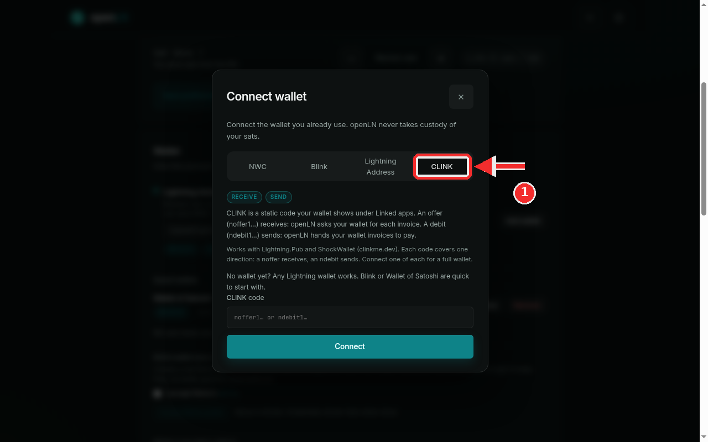
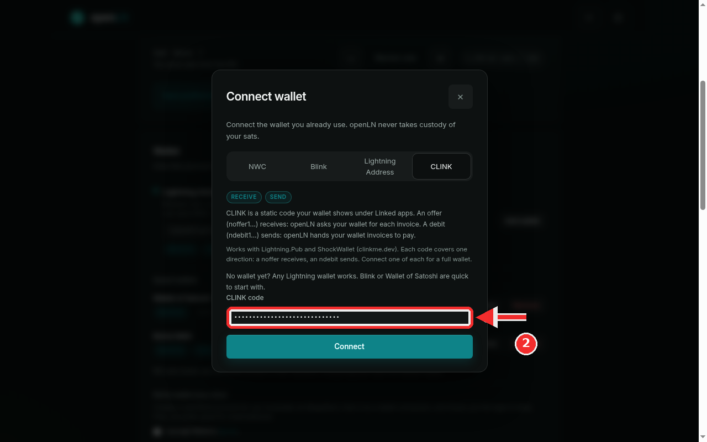

How to connect CLINK codes and authorize sending
CLINK is a direct connection between openLN and a wallet that speaks the CLINK protocol, such as Lightning.Pub or ShockWallet. Instead of a key or an address, you connect it with a static code your wallet shows under Linked apps: an offer code receives and a debit code sends. Each code covers exactly one direction, so a full wallet means connecting one of each. This guide connects a code and explains the one-time authorization a debit asks for before it can send.
- You are signed in to your openLN account (any device, phone or computer).
- You have Lightning.Pub or ShockWallet (both are CLINK wallets, from clinkme.dev), set up and able to connect to its relay.
- In the wallet, open Linked apps and copy a static code: a
noffer1...code to receive or anndebit1...code to send. Do not copy a one-time session code; openLN refuses those and asks for the static one. - Keep the wallet app online while you work through this: openLN reaches the wallet through its relay, starting with the check it runs at connect time.
Open the connect dialog and choose the CLINK tab
Go to Settings and find the Wallet card, the one that starts with "How this account receives and sends sats". Press Connect on your first wallet, or Add wallet when one is already saved; the Connect wallet dialog opens either way.
The dialog offers four kinds of connections: NWC, Blink, Lightning Address and CLINK. Press the CLINK tab. The chips under the tabs show Receive and Send; which of the two your connection gets depends on the code you paste.
The dialog's own text is the whole model, so read it once: "An offer (noffer1...) receives: openLN asks your wallet for each invoice. A debit (ndebit1...) sends: openLN hands your wallet invoices to pay." In plain words: an offer code is a receive code, and every time a payment needs to come in, openLN asks your wallet to mint a fresh invoice. A debit code is a send code, and every time a payment needs to go out, openLN hands the invoice to your wallet to pay.
Each code covers one direction only: a noffer lands in receive lists and an ndebit in send lists. Connect one of each for a full wallet. A debit also needs a one-time authorization that no setup step can skip: the first time openLN wants to send from it, your wallet asks you to approve the request. openLN prompts for this right after you connect a debit, so it is worth having the wallet app open and in front of you now.
As on every lane, openLN never takes custody of your sats. The wallet signs what leaves it, and the codes only give openLN permission to ask.

Paste the code and press Connect
Press the CLINK code field and paste the code exactly as your wallet shows it. The field is masked (it shows dots) because a CLINK code is a secret you should not paste into chats or show in screenshots. For example, an offer code looks like noffer1qbob_demo_code_example.
Press the big Connect button at the bottom of the dialog. openLN reads the code and checks it before saving anything: an offer is proven by asking your wallet for a tiny real invoice (it is left to expire unpaid, nothing is charged), while a debit gets structural checks only, because a probe on a debit would move money. A one-time session code is refused with a message telling you to open Linked apps and copy your static code.
When the check passes, the wallet is added to Saved wallets with the name of its kind and the capability for its direction: a noffer carries Receive, an ndebit carries Send. If it is your first wallet it also becomes the default.
CLINK works with Lightning.Pub and ShockWallet (from clinkme.dev). Keep your wallet app online so its relay is reachable: openLN reaches the wallet through that relay for every invoice it asks for, every invoice it hands over to pay, and the authorization prompt. If the wallet cannot be reached, openLN says so instead of proceeding, and a message like "Could not reach your wallet's relay" simply means the wallet was offline; bring it back online and try again.
Right after a debit connects, openLN opens the Authorize sending (wallet allowance) block under the new row. Open your wallet now and keep it in front: set the allowance (10,000 sats per month by default, up to 100,000,000), press Send request, and approve the request when it appears in the wallet as a live prompt. Once approved, sends within the allowance go through without prompting; you can change or revoke it any time in the wallet under Linked apps, and pressing Send request again is safe, it simply confirms an existing allowance.

- One direction per code. An offer receives, a debit sends; no single code does both. A CLINK-only setup therefore needs two connections, one of each, and they simply sit side by side in Saved wallets. In the RIC and Cards sections each feature picks which saved wallet it uses, so the offer can serve receive and the debit can serve send, each in its own slot.
- The first send may wait for you. Silence on a fresh debit usually means the wallet is holding an approval prompt for you, not that something failed. Approve it in the wallet (ShockWallet shows it under Linked apps) and the send proceeds.
- Ambiguous sends are never retried blindly. If a debit gets no answer in time, openLN leaves the payment pending and checks the wallet's own record before calling anything failed, so a slow approval can never cause a double payment.
- The wallet keeps the funds. openLN never takes custody of your sats; it asks your wallet for invoices and your wallet pays the ones you authorize. If the codes ever stop working, check the wallet's relay connection first.